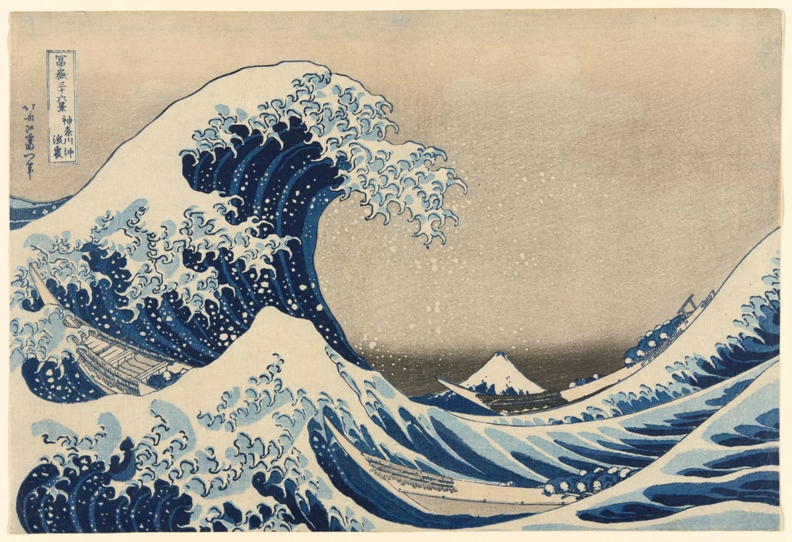

把重点圈出来
箭头指出问题，马赛克遮住隐私。遇到长页面，滚动截图会逐段拼接，完成后还能继续标注。
⌘S 保存选区
macOS 原生截图工具
用 ii ne 框住屏幕上的一小块，把它贴在桌面上对照。画个箭头、提取文字，或一直往下截成长图。
macOS 12 及以上 · MIT 开源

框选画面，在选区旁直接标注。
箭头指出问题，马赛克遮住隐私。遇到长页面，滚动截图会逐段拼接，完成后还能继续标注。
把剪贴板里的图或文字贴在其他窗口上方。边写边对照，用完拖到屏幕边缘，随时拉回来。
在本机识别截图里的文字，复制后接着用。需要换种表达时，也能在同一个工作台翻译、润色。
git clone https://github.com/Yaosc972/ii-ne.git
cd ii-ne
./build.sh install